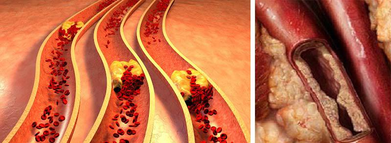

Der Einwohner von München Wilfried Krause wurde 1901 im deutschen Reich geboren , überlebte zwei Weltkriege, die Spaltung und die Wiedervereinigung, erlebte ein Dutzend Machthaber. Er wurde im Deutschen Buch der Rekorde als ältester lebender Mann der Welt eingetragen, 20 Juli feierte Großvater seinen 120 Jahrestag
Wilfried hat nicht nur seine Altersgenossen, sondern auch viele Kinder seiner Altersgenossen überlebt.
Der Großvater und sogar schon der Urgroßvater unterzieht sich regelmäßigen medizinischen Untersuchungen. Jedes Jahr sagen die Ärzte das Gleiche: Er ist völlig gesund und könnte schon morgen ins All fliegen
Trotz seines langen Lebens verließ Wilfried Krause sein Dorf nur selten und lehnte es immer ab, wenn Kinder ihm vorschlugen, in die Stadt zu ziehen. Alter ist schließlich Alter, dachten die Kinder. Aber das Alter spielt für den langen Mann keine Rolle
Wilfried Krause lebt in einem großen Holzhaus, das sein verstorbener Vater gebaut hat. Er kümmert sich um das Haus. Er hat auch einen 10 Hektar großen Gemüsegarten, den er jedes Jahr beackert. Wilfried kümmert sich auch um sein Vieh: eine Kuh, mehrere Ziegen und Hühner. Und er hat genug Energie, um das alles zu tun.

Wir haben den langlebigen Mann für ein Interview aufgesucht, um sein größtes Geheimnis zu erfahren: wie man so lange lebt und nicht krank wird. Schon am Kuchentisch merken wir, dass Wilfried Krause außer uns noch eine Menge im Kopf hat. Wir wollen ihn nicht lange mit seinen Fragen aufhalten, also gehen wir direkt zu dem über, weswegen wir gekommen sind
Wilfried Krause, Sie haben ein langes Leben hinter sich. Viel länger als alle anderen. Wie haben Sie das geschafft?
Ich habe jedem, der mir diese Frage gestellt hat, schon oft gesagt (Journalisten besuchen den langlebigen Mann regelmäßig). Es handelt sich um saubere Gefäße. Das habe ich vor dem Krieg von Asmet gelernt. Asmet lebte in unserem Dorf, er war Kräutersammler. Das ganze Dorf kam zu ihm zur Behandlung, auch aus anderen Dörfern. Während des Krieges wurde er zur Behandlung von Soldaten eingesetzt und kehrte nie zurück. Wir wohnten damals direkt neben seinem Haus
Abends saßen wir alle zusammen auf dem Schrottplatz. Abends saßen wir immer zusammen auf der Bank. Er hat uns gesagt, wie und was wir behandeln sollen. Ich hatte zu der Zeit eine Schwester. Sie hatte gesundheitliche Probleme. Meine Eltern behandelten ihre Blutgefäße und sie erholte sich. Seitdem sind wir zu der Überzeugung gelangt, dass die Blutgefäße das Wichtigste sind, worauf man achten muss. Seitdem sehen wir ihn uns als Familie immer wieder an. Meine Eltern starben '87 auf tragische Weise. Meine Schwester hat auch lange gelebt, aber nicht so lange wie ich. Sie starb im Alter von 95 Jahren. Ich habe meinen Kindern immer beigebracht, auf ihre Blutgefäße zu achten
Das Geheimnis der Langlebigkeit liegt also in den Gefäßen, sie müssen von Zeit zu Zeit gereinigt werden. Aber niemand tut das, also leben sie nicht lange. Dies gilt insbesondere für städtische Rentner. Sie nehmen gerne Pillen und glauben, dass sie ihnen helfen werden. Als ich in der Stadt war und meine Enkelin besuchte, war ich sehr überrascht. Im Alter von 60 Jahren sind sie alle krank. So helfen ihre Pillen. Diese ganze Chemie. Aber wenn sie ihre Blutgefäße reinigen würden, wären sie gesund und aktiv wie ich
- Wilfried Krause, glauben Sie, dass jemand mit schlechter Gesundheit länger leben würde, wenn er anfinge, seine Blutgefäße zu reinigen?
- Natürlich! Wie könnte es anders sein? Nun, denken Sie darüber nach. Das Blut fließt durch die Blutgefäße und versorgt alle Organe mit Nährstoffen. Je besser die Ernährung, desto gesünder die Organe. Die Gesundheit des Menschen hängt von der Gesundheit der Blutgefäße ab. Aber Gefäße werden mit der Zeit kontaminiert. Denn im Blut können sich Schmutz und alle möglichen nicht aufgenommenen Stoffe befinden, die sich in den Blutgefäßen absetzen. Sie können einfach nirgendwo hin. Die Blutgefäße werden kontaminiert wie ein rostiges Rohr. Das Blut fließt nicht mehr zu den inneren Organen. Die Folge ist, dass sie verhungern und krank werden. Die Nieren, der Magen, die Leber oder die Blase leiden unter einer schlechten Blutversorgung. Auch der Kopf. Stellen Sie sich vor, ich würde eine Kuh nicht mehr richtig füttern. Sie würde auf einmal krank werden!
Und wenn man die Blutversorgung verbessert, werden auch die Organe besser. Die Menschen werden vielleicht nicht so lange leben wie ich, aber sie werden auf jeden Fall länger leben. Um 3 oder 5 oder vielleicht sogar 10 Jahre. So wurden die Menschen früher behandelt, als es noch keine Pillen gab und alle gesund waren
Mir fällt gerade eine Geschichte ein. Eine Frau aus Bremen hat mir geschrieben. Ihr Mann litt unter starkem Bluthochdruck. Er litt unter mehreren Vorinfarkten. Die Ärzte sagten, er würde nicht mehr lange leben. Kaufen Sie einen Platz auf dem Friedhof. Sie hat mich auch gefragt, wie man ihn heilen kann. Vielleicht kenne ich ein Geheimnis. Ich sagte ihm, er solle seine Blutgefäße reinigen lassen. Ich kenne keine Geheimnisse mehr. Seitdem sind über 10 Jahre vergangen. Der Mann ist gesund und munter und hat jetzt keinen Bluthochdruck mehr. Danach haben sie begonnen, als Familie die Blutgefäße zu reinigen. Und sie gratulieren mir jetzt jedes Jahr zu meinem Geburtstag. Generell gibt es viele gute Geschichten.
Ich wurde auch oft von Journalisten danach gefragt, ich habe ihnen immer geantwortet. Aber anscheinend hört niemand auf mich. Und das vergeblich! Wenn Sie die Blutgefäße reinigen, können Sie lange leben und vor allem gesund sein! Schließlich ist es auch nicht schön, lange krank zu leben
Nach Angaben der Weltgesundheitsorganisation (WHO) verursacht die Verschmutzung der Blutgefäße bis zu 93 % der verschiedenen Krankheiten: von Erkrankungen des Magen-Darm-Trakts bis zur Verschlechterung des Sehvermögens
- Und wie reinigt man seine Blutgefäße? Könnten Sie ein Rezept mit unseren Lesern teilen?
Ich habe sie früher selbst geputzt. Früher habe ich speziell für diesen Zweck Kräuter hergestellt. Früher hatte ich mehr Kraft. Ich bin früher selbst zur richtigen Zeit in die Wälder und auf die Felder gegangen, habe getrocknet und dann gekocht. Früher habe ich die Gefäße einmal in 2 Jahren gereinigt. Man muss es nicht öfter machen, denn die Schiffe haben vorher keine Zeit, sich schmutzig zu machen. Aber jetzt sammle ich selbst keine Kräuter mehr. Man darf nur zu bestimmten Zeiten in den Wald gehen. Es gibt viel zu regeln.
Es ist 15 Jahre her, dass ich damit aufgehört habe. Ich habe eine ältere Tochter, die in Deutschland lebt. Sie verschreibt mir ein spezielles Mittel, das ich per Post erhalte. Ich benutze sie, um die Blutgefäße zu reinigen. Zina, die als Briefträgerin arbeitet, bringt sie mir immer nach Hause. Es wirkt sogar noch besser als Kräuter. Und wie Sie wissen, habe ich nicht mehr die Kraft, sie zu sammeln. Auch wenn ich gesund bin, fordert das Alter seinen Tribut. Man kann das Alter verlangsamen, aber man kann es nicht aufhalten.
- Wie heißt dieses Mittel?
Oh, ich erinnere mich nicht einmal. Orange und weiß. Aber ich habe es weggeworfen. Fragen Sie lieber meine Tochter, wie es heißt. Ich gebe Ihnen ihre Nummer und Sie können sie anrufen. Aber sie lebt in Deutschland und du wirst wahrscheinlich viel Geld von ihr bekommen...
Wilfried Krause braucht lange, um im Nebenraum etwas zu suchen. Dann bringt er ein abgenutztes Adressbuch mit, in das Großvater auf altmodische Weise Telefonnummern einträgt.
Wir beschlossen, unsere Tochter anzurufen und nach der mysteriösen Mittel zu fragen. Die Tochter sagte, dass das Mittel, das hilft, die Blutgefäße vollständig zu reinigen, heißt. Dies ist die neueste Entwicklung auf dem Gebiet der Kardiologie.
Wir haben den Chefarzt der Berliner Klinik für Kardiologie, Frank Ulemann, zu diesem Medikament und zum Verfahren zur Reinigung von Blutgefäßen im Allgemeinen befragt. Und zu unserer Freude erklärte er sich bereit, unsere Fragen zu beantworten.
- Frank Uhlemann, sagen Sie uns, ist es wirklich sinnvoll, die Blutgefäße zu reinigen?
Im Laufe der Zeit kommen immer mehr Ärzte zu dem Schluss, dass dies wirklich ein äußerst nützliches Verfahren ist, das nicht nur die Lebenserwartung erhöhen, sondern auch die Gesundheit des Menschen verbessern kann. Heute wird, auch im Ausland, die Behandlung verschiedener Krankheiten (z. B. Nieren- und Lebererkrankungen) häufig durch eine Gefäßreinigungstherapie ergänzt. Denn cholesterinverseuchte Blutgefäße sind sehr schlecht für die Gesundheit! Ich spreche nicht von den Patienten, die zum Beispiel Herz-Kreislauf-Erkrankungen oder Bluthochdruck haben. Sie müssen ihre Gefäße reinigen lassen.
Dieses Produkt enthält eine spezielle Form von Vitamin B2. Diese Substanz ist in der Lage, in die Cholesterinmoleküle einzudringen und sie von innen heraus zu zerstören. Infolge einer Behandlung werden die Blutgefäße vollständig von Cholesterinablagerungen an den Wänden befreit und Blutgerinnsel aufgelöst. In 96 % der Fälle normalisiert sich der Blutdruck der Patienten nach der Gefäßreinigung.
Ich möchte Ihnen die Statistiken über die Verwendung des Produkts durch normale Patienten in unserer Klinik zeigen. Wir zeichnen die Ergebnisse der Behandlung sorgfältig auf. Bei uns haben etwa 10 000 Patienten ausprobiert. Hier sind ihre Ergebnisse:
- 1. Blutdruck vollständig stabilisiert (kein Bluthochdruck mehr) - 98,6 % der Befragten;
- 2. die Herzfrequenz normalisiert - 97,2 % der Befragten;
- 3. 99,8 % der Befragten haben keine Kopfschmerzen mehr;
- 4. verbessertes Sehvermögen - 74,5 % der Befragten;
- 5. die Wirksamkeit der Behandlung chronischer Krankheiten verbessert - 92,9%;
- 6. signifikante Verbesserungen des allgemeinen Gesundheitszustands - 99,9 % der Befragten
Wie Sie also sehen, sind die Ergebnisse einfach hervorragend. Aber das ist nicht überraschend.
Der selbst wurde von einem führenden deutschen Institut auf diesem Gebiet entwickelt. Neben Garlic extract enthält es etwa 50 weitere Vitamine, Makro- und Mikroelemente, die für Herz und Blutgefäße nützlich sind. Ich werde einige von ihnen auflisten
|
Weißdorn-Extrakt. |
Erweitert die Blutgefäße und erhöht die Elastizität der Kapillaren durch Flavonoide und Gerbstoffe, die darin enthalten sind. |
|
Knoblauchknollenextrakt. |
Senkt den Cholesterinspiegel, verhindert die Entwicklung von Arteriosklerose der Gefäße, und beschleunigt die Regeneration von geschädigtem Gewebe. |
|
Baldrianwurzelextrakt. |
Reguliert den Druck, normalisiert den Rhythmus des Herzens, verhindert die Bildung von Blutgerinnseln und Ablagerungen von Kalziumkalk an den Gefäßwänden. |
|
Vitamin B2. |
Es hat eine stärkende und immunstimulierende Wirkung, die dem Körper hilft, die Krankheit zu bekämpfen. |
|
Mistelextrakt. |
Reduziert den Druck auf das Altersnorm, unterstützt das Herz-Kreislauf-System. |
Wilfried Krause sagte, dass er per Post bekommt. Ist das wahr? Können andere Leute es auch so bekommen?
- Ja, das ist richtig. ist meines Wissens nur noch auf Anfrage des Herstellers erhältlich. Absolut jeder kann das Medikament bekommen. Sie brauchen kein ärztliches Attest, um an dem Programm teilzunehmen - Sie müssen nur das unten stehende Anmeldeformular ausfüllen. wird bundesweit per Post oder Kurier zugestellt, und die Lieferung ist ebenfalls völlig .
Wer seine Blutgefäße mit diesem Mittel reinigen will, dem empfehle ich, es jetzt zu verschreiben, solange die Aktion noch gültig ist. Die Gefühle und die Gesundheit im Allgemeinen verbessern sich bei allen schon nach der ersten Behandlung.
Das Einzige, wovor ich Sie warnen möchte, ist, dass das
Gesundheitsministerium uns in diesem Jahr nicht die notwendigen Mittel zur Verfügung gestellt hat,
um das bereits
WARNUNG: Alle, die erhalten möchten, können dies im Rahmen des Benefizprogramms tun. Die Anzahl der Werbeartikel ist begrenzt
.